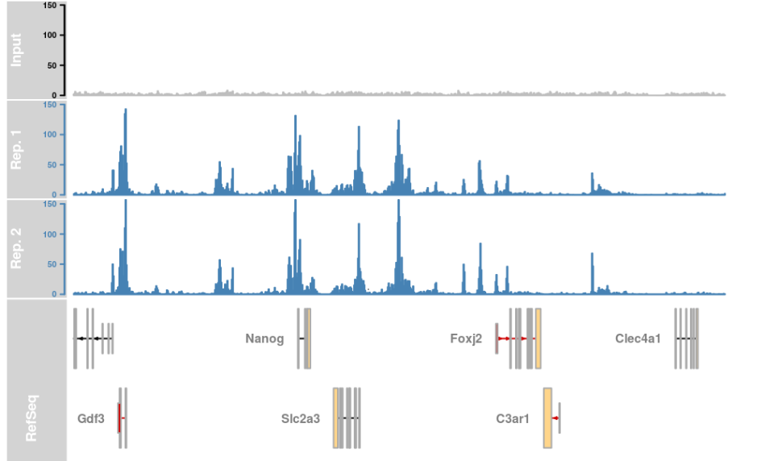
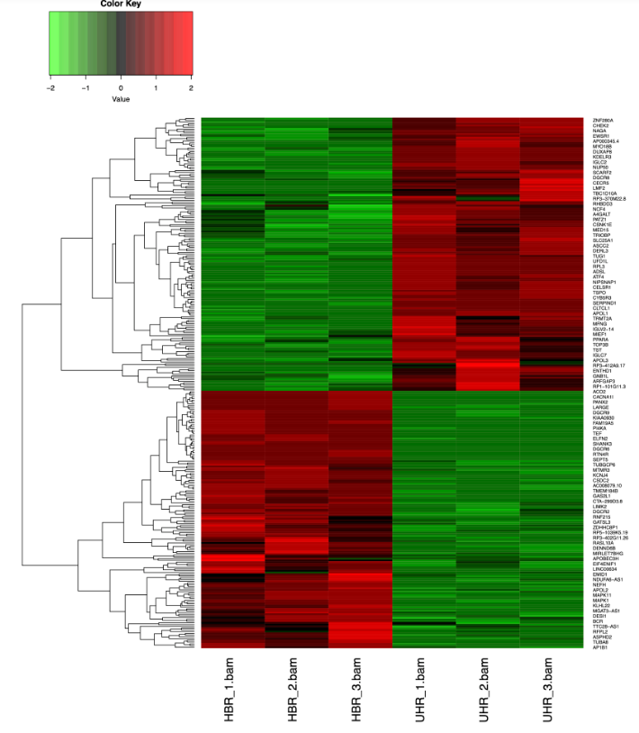
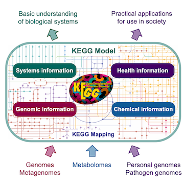

Motivation



Kyoto Encyclopedia of Genes and Genomes (KEGG)
Gene Ontology (GO)
Example of insulin annotation and insulin secretion process in KEGG
Example of insulin annotation and insulin secretion process in GO
Enrichment Analysis Summarizes identified differences in genes associated with common functions.
Analogy: You are flipping an unfair coin
ChIP-seq: Identified Region
The probability of getting exactly k heads out of n with the probability \(p\):
\[ P(X = k) = \binom{n}{k}(p)^k(1-p)^{n-k} \]
\[ \text{p-value} = P(X \geq k) = \sum_{i=k}^{n}\binom{n}{i}(p)^i(1-p)^{n-i} \]
In our example, it will be
\[ P(X\geq 5) = \binom{6}{5}(0.6)^5(1-0.6)^{1} +\binom{6}{6}(0.6)^6(1-0.6)^{0}=0.23 \]
For a given false discovery rate (FDR, typically 0.05), if \(\text{p-value} < FDR\), we will say that the regulatory element is enriched in the pathway \(\pi\).
For a sequence with length \(N\) with \(K_\pi\) of them annotated with pathway \(\pi\)
ChIP-seq selected \(n\) genomic regions and \(k_\pi\) of them fall into the annotation of pathway \(\pi\)
\(p_\pi\) is the probability of selecting a base pair annotated with \(\pi\) when selecting a single base pair uniformly from all base pairs in the genome \[ \text{p-value} = P(X \geq k_\pi) = \sum_{i=k_\pi}^{n}\binom{n}{i}(p_\pi)^i(1-p_\pi)^{n-i} \]
Each pathway needs to be tested once, and when testing on more than one pathway, P-value correction (e.g., Bonferroni or other methods) should be applied.
Q1 What is the p-value of the binomial test that at least 6 out of 10 fall into the annotated regions?
\[ P(X\geq 6) = \sum_{i=6}^{10}\binom{10}{i}(0.14)^i(1-0.14)^{10-i} = 0.00095 \]
Q2 Given the p-value, is the protein enriched in the pathway multicellular organismal development at the 0.05 false discovery rate?
Protein is enriched in the pathway multicellular organismal development
Problem Statement
| DE | NOT DE | Row sum | |
|---|---|---|---|
| In \(\pi\) | 8(a) | 2(b) | 10 (\(M\)) |
| NOT in \(\pi\) | 32(c) | 58(d) | 90 (\(N-M\)) |
| Column sum | 40 (\(n\)) | 60 (\(N-n\)) | 100 (\(N\)) |
| Gene | Log2FC | Adjusted p-value |
|---|---|---|
| G1 | -2.8 | 0.010 |
| G2 | 2.6 | 0.028 |
| G3 | 2.5 | 0.031 |
| G4 | 2.4 | 0.040 |
| \(\vdots\) | \(\vdots\) | \(\vdots\) |
| G99 | 0.1 | 0.849 |
| G100 | 0.4 | 0.733 |
\[ P = \sum_{i=a}^M \frac{\binom{M}{i}\binom{N-M}{n-i}}{\binom{N}{n}} = 1- \sum_{i=0}^{a-1} \frac{\binom{M}{i}\binom{N-M}{n-i}}{\binom{N}{n}} \]
\[ P = \sum_{i=8}^{10}\frac{\binom{10}{i}\binom{90}{40-i}}{\binom{100}{40}} = 1- \sum_{i=0}^{7} \frac{\binom{10}{i}\binom{90}{40-i}}{\binom{100}{40}} = 0.0015 \]
| Differentially Expressed | NOT Differentially Expressed | Row Sum | |
|---|---|---|---|
| In the pathway \(\pi\) | 8 | 2 | 10 |
| NOT in the pathway \(\pi\) | 32 | 58 | 90 |
| Column Sum | 40 | 60 | 100 |
\[ P = \sum_{i=a}^M \frac{\binom{M}{i}\binom{N-M}{n-i}}{\binom{N}{n}} = 1- \sum_{i=0}^{a-1} \frac{\binom{M}{i}\binom{N-M}{n-i}}{\binom{N}{n}} \]
Consider a genome with 30 genes, where the functional pathway “PATH_X” contains 5 genes, G1, G2, G3, G4, G5. 10, G1, G2, G3, G4, G25, … , G30 are differentially expressed genes in males, with Log2 fold change (Log2FC) and adjusted p-values as follows
Q1 Derive the contingency table for the study above to conduct over-representation analysis. use \(p<0.05\) as selection criteria
Q2 What is the p-value for the over-representation analysis
| Gene | Log2FC | Adjusted p-value |
|---|---|---|
| G1 | -2.2 | 0.049 |
| G2 | -2.3 | 0.049 |
| G3 | -2.8 | 0.010 |
| G4 | 2.3 | 0.049 |
| \(\vdots\) | \(\vdots\) | \(\vdots\) |
| G30 | 2.4 | 0.033 |
Q1
| DE | NOT DE | |
|---|---|---|
| In the pathway | 4 | 1 |
| NOT in the pathway | 6 | 19 |
Q2
\[\begin{aligned} P & = \sum_{i=4}^5 \frac{\binom{5}{i}\binom{25}{10-i}}{\binom{30}{10}} \\ & = \frac{\binom{5}{4}\binom{25}{10-4}}{\binom{30}{10}}+ \frac{\binom{5}{5}\binom{25}{10-5}}{\binom{30}{10}} =0.03124 \\ & = 1-\sum_{i=0}^3 \frac{\binom{5}{i}\binom{25}{10-i}}{\binom{30}{10}} \\ & = 1 - \biggl( \frac{\binom{5}{0}\binom{25}{10-0}}{\binom{30}{10}}+ \frac{\binom{5}{1}\binom{25}{10-1}}{\binom{30}{10}} \\ &+ \frac{\binom{5}{2}\binom{25}{10-2}}{\binom{30}{10}}+ \frac{\binom{5}{3}\binom{25}{10-3}}{\binom{30}{10}}\biggr) =0.03124 \end{aligned} \]
Consider our gene set with size \(N\), and the pathway \(\pi\) has \(M\) genes in it.
Initial running sum of enrichment score is \(ES_0 = 0\), the denominator \(N_R=\sum |r_j|\), where \(r_j\) is the log fold change of genes that are in the pathway \(\pi\)
Going through the ordered gene \(n_i\) list, do:
The final enrichment score is \(ES = \max(|ES_i|)\)
Permutation Test: Randomly shuffle the gene label for each expression level for \(k\) times and plot the \(ES\) distribution for these \(k\) permutations, and the p-value will be
\[ \small \text{P-value} = \frac{\text{# of times} ES \geq ES_o}{k} \]
| Gene | Log2FC |
|---|---|
| G1 | 2.3 |
| G2 | 0.7 |
| G3 | 2.6 |
| G4 | 1.4 |
| G5 | 1.2 |
| G6 | 0.1 |
| Gene | Log2FC |
|---|---|
| G4 | 2.3 |
| G2 | 0.7 |
| G6 | 2.6 |
| G1 | 1.4 |
| G5 | 1.2 |
| G3 | 0.1 |
| Gene | Log2FC |
|---|---|
| G4 | 2.3 |
| G1 | 0.7 |
| G6 | 2.6 |
| G2 | 1.4 |
| G3 | 0.1 |
| G5 | 0.6 |
Consider a DEG for 8 genes {G1 to G8}, where the functional pathway “PATH_A” contains 4 genes {G1, G2, G3, G4}. With the readings on the right, please calculate the enrichment score of PATH_A on this array.
| Gene | Log2FC |
|---|---|
| G1 | 2.3 |
| G2 | 0.7 |
| G3 | 2.6 |
| G4 | 1.4 |
| G5 | 1.2 |
| G6 | 0.1 |
| G7 | 0.3 |
| G8 | 0.6 |
| Rank | Gene | Hit/Miss | Score |
|---|---|---|---|
| 1 | G3 | Hit | 2.6/7 |
| 2 | G1 | Hit | 2.3/7 |
| 3 | G4 | Hit | 1.4/7 |
| 4 | G5 | Miss | -1/4 |
| 5 | G2 | Hit | 0.7/7 |
| 6 | G8 | Miss | -1/4 |
| 7 | G7 | Miss | -1/4 |
| 8 | G6 | Miss | -1/4 |
Consider a DEG for 8 genes {G1 to G8}, where the functional pathway “PATH_B” contains 5 genes {G1, G2, G3, G4, G5}. With the readings on the right, please calculate the enrichment score of PATH_B on this array.
| Gene | Log2FC |
|---|---|
| G1 | -2.0 |
| G2 | -0.1 |
| G3 | -2.3 |
| G4 | -1.7 |
| G5 | -0.9 |
| G6 | 0.1 |
| G7 | 0.3 |
| G8 | 0.6 |
| Rank | Gene | Hit/Miss | Score |
|---|---|---|---|
| 1 | G8 | Miss | -1/3 |
| 2 | G7 | Miss | -1/3 |
| 3 | G6 | Miss | -1/3 |
| 4 | G2 | Hit | 0.1/7 |
| 5 | G5 | Hit | 0.9/7 |
| 6 | G4 | Hit | 1.7/7 |
| 7 | G1 | Hit | 2/7 |
| 8 | G3 | Hit | 2.3/7 |
ORA
GSEA
Different results in ORA and GSEA might implies subtle difference at the boundary of arbitrary cut-off (i.e. some genes with p-value like 0.051)
In reality, proteins can interact together, and it’s more complex than what we’ve seen in KEGG.
Reasons
Proteins could interact with each other in other pathways (e.g., some interactions can be related to insulin resistance but not insulin secretion, so KEGG does not show it)
Scientific advancements and experiments:
Getting Protein-Protein Interaction (PPI) Network
STRING: A database to document interactions between proteins
Definition of the Network
\[\begin{equation*} \begin{split} G&=(V,E) \\ V&=\text{All the nodes (Proteins)}\\ E&=\{(s,e)\} \quad \text{All the edges from s to e (interactions between two)} \end{split} \end{equation*}\]
Degree
\[\begin{equation*} \text{Degree(i)}=\sum_{j=0}^{\vert N\vert}e_{ij} \end{equation*}\]
Degree of:
Clustering Coefficient
\[\begin{equation*} \begin{split} \text{Clustering coefficient(i)}&=\frac{L_i}{\frac{k_i(k_i-1)}{2}}\\ &=\frac{2L_i}{k_i(k_i-1)} \end{split} \end{equation*}\]
Clustering coefficient of:
Degree
Clustering Coefficient
{kind=link}
{kind=link}
{kind=link}
{kind=link}
{kind=link}
{kind=link}
{kind=link}
{kind=link}
{kind=link}
{kind=link}